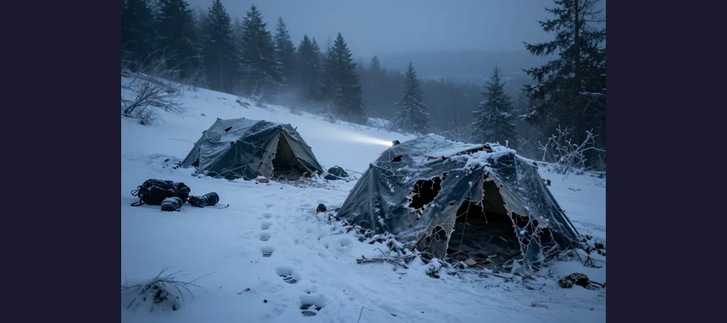
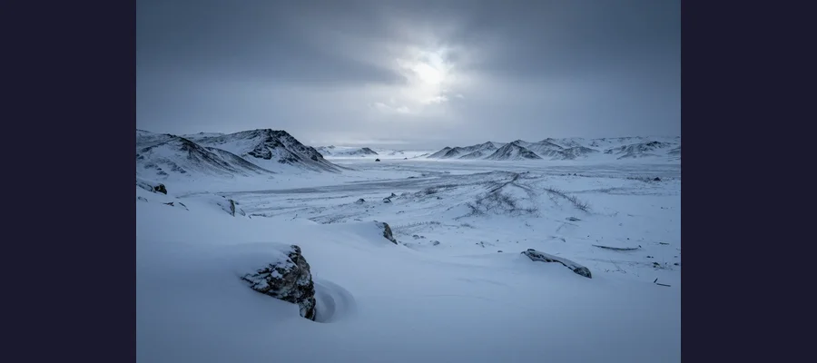

The Dyatlov Pass Incident: Nine Hikers Died Under Impossible Circumstances

In 1959, nine experienced Soviet hikers were found dead in the Ural Mountains under bizarre conditions — some with crushing injuries, some with missing body parts, all partially clothed in freezing temperatures.
In January 1959, a group of nine experienced ski hikers from the Ural Polytechnical Institute set out on a challenging expedition through the northern Ural Mountains in Soviet Russia. Led by 23-year-old Igor Dyatlov, the group was experienced and well-equipped for the harsh winter conditions.
When they failed to return by their planned date, a search party was dispatched. What they found has become one of the most disturbing and debated mysteries of the 20th century.
The searchers discovered the group's tent on the slopes of Kholat Syakhl ("Dead Mountain" in the local Mansi language). The tent had been cut open from the inside, with the hikers' belongings still inside. Nine sets of footprints led away from the tent toward the forest below — but the hikers were barefoot or wearing only socks in -30°C (-22°F) temperatures.
Evidence
The forensic evidence from the Dyatlov Pass incident has puzzled investigators for over 65 years.
- 🫁 Two victims had crushed chests: The force required was compared to being hit by a car, yet there were no external wounds.
- 👅 Missing body parts: One victim was missing her tongue, eyes, and part of her lip. Another was missing his eyebrows.
- ☢️ Radiation detected: Some clothing items showed traces of radioactive contamination.
- 🧤 Paradoxical undressing: Several victims had removed their clothing despite the extreme cold, a phenomenon sometimes seen in hypothermia victims.

The campsite on Kholat Syakhl (Dead Mountain) where the tent was found cut open from the inside
📋 The Soviet Investigation
The official Soviet investigation concluded the hikers died from "a compelling natural force" — but refused to specify what that force was. The case files were classified for decades, fueling conspiracy theories.
Competing Explanations
Numerous theories have been proposed to explain the Dyatlov Pass deaths, ranging from scientific to speculative.
Avalanche theory (2019/2021): Swiss researchers used computer modeling to demonstrate that a rare type of avalanche — a "slab avalanche" triggered by the hikers cutting into the slope to pitch their tent — could explain the chest injuries and the panicked evacuation. The delayed trigger (hours after the slope was cut) explains why they didn't expect it.

Kholat Syakhl in the northern Ural Mountains — one of the most remote and inhospitable locations in Russia
infrasound / Kármán vortex theory: Wind flowing over the rounded summit could have created infrasound (low-frequency sound waves below human hearing) that induced irrational panic, explaining why they fled the tent half-clothed.
Military weapons testing: Some believe the area was used for secret Soviet weapons testing. The radiation on clothing and the classified files support this theory, though no definitive evidence has been found.
🏔️ Dead Mountain
"Kholat Syakhl" means "Dead Mountain" in the local Mansi language. The Mansi people had considered the mountain cursed long before the 1959 incident. The name's ominous meaning was noted by investigators at the time.
Open Questions
Despite a 2019 Russian investigation officially attributing the deaths to an avalanche, many questions remain.
What caused the crushing injuries? The avalanche theory explains much, but some forensic experts argue the specific injury patterns are inconsistent with avalanche debris.
Why was there radiation? The radioactive contamination on clothing has never been fully explained. It could have come from natural sources (like radon) or from something the hikers encountered — but the question lingers.
The Dyatlov Pass incident remains one of the most chilling unsolved mysteries of the 20th century!
📖 Recommended Reading
Want to learn more? Check out Dead Mountain: The Untold True Story of the Dyatlov Pass Incident by Donnie Eichar on Amazon for a deeper dive into this fascinating topic. (As an Amazon Associate, we earn from qualifying purchases.)
References & Further Reading
- History.com: The Dyatlov Pass Incident
- Wikipedia: Dyatlov Pass incident
- Smithsonian: Scientists may have unraveled the mystery
- Science Times: Scientific theories explained
Editorial note: reconstructions are continuously revised as imaging and inscription studies improve. See our Editorial Policy.